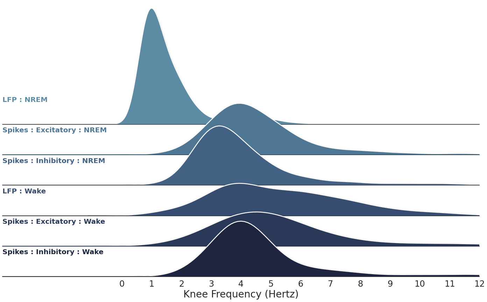

Figure 4. Sleep vs. Wake
Contents
import warnings
from copy import deepcopy
from functools import partial
from multiprocessing import Pool, cpu_count
import os.path as op
import matplotlib.pyplot as plt
import seaborn as sns
import numpy as np
from scipy.io import loadmat
from scipy.stats import ttest_ind, ttest_rel, pearsonr
from neurodsp.spectral import compute_spectrum
from neurodsp.utils.norm import normalize_sig
from neurodsp.filt import filter_signal
from fooof import FOOOF
from fooof.objs import combine_fooofs
from timescales.fit import convert_knee_val, fit_psd_fooof
from timescales.sim import sim_spikes_synaptic
from timescales.autoreg import compute_ar_spectrum
from timescales.plts import plot_connected_scatter, set_default_rc
from timescales.utils import create_windows
from tqdm.notebook import tqdm
set_default_rc()
Figure 4. Sleep vs. Wake#
The timescales, as knee frequencies, are compared between 4 types of spike trains:
Wake : Excitatory Units
NREM : Excitatory Units
Wake : Inhibitory Units
NREM : Inhibitory Units
def compute_spectra_trials(spikes_e, spikes_i, start_end, f_range, bin_size, ar_order,
kwargs_welch=None, kwargs_ar=None, mean=None, variance=None):
"""Compute Welch's and AR PSD for exciatatory and inhibitory spikes."""
# Ensure unpackable
if kwargs_welch is None:
kwargs_welch = {}
if kwargs_ar is None:
kwargs_ar = {}
# Compute AR-PSD and Welch's-PSD for each window
for ind, (s, e) in enumerate(start_end):
# Normalize
spikes_bin_e = normalize_sig(
spikes_e[s:e].reshape(-1, bin_size).sum(axis=1), 0, 1)
spikes_bin_i = normalize_sig(
spikes_i[s:e].reshape(-1, bin_size).sum(axis=1), 0, 1)
# Compute excitatory spectra
freqs_ar, _powers_ar_e = compute_ar_spectrum(spikes_bin_e, fs/bin_size, ar_order,
f_range=f_range, **kwargs_ar)
freqs_welch, _powers_welch_e = compute_spectrum(spikes_bin_e, fs/bin_size,
f_range=f_range, **kwargs_welch)
# Compute inhibitory spectra
_, _powers_ar_i = compute_ar_spectrum(spikes_bin_i, fs/bin_size, ar_order,
f_range=f_range, **kwargs_ar)
_, _powers_welch_i = compute_spectrum(spikes_bin_i, fs/bin_size,
f_range=f_range, **kwargs_welch)
# Initalize arrays
if ind == 0:
freqs = {'welch': freqs_welch, 'ar': freqs_ar}
powers = {
'ar': {'excitatory': np.zeros((len(start_end), len(_powers_ar_e))),
'inhibitory': np.zeros((len(start_end), len(_powers_ar_i)))},
'welch': {'excitatory': np.zeros((len(start_end), len(_powers_welch_e))),
'inhibitory': np.zeros((len(start_end), len(_powers_welch_i)))}
}
if mean is not None and variance is not None:
_powers_ar_e = normalize_sig(_powers_ar_e, mean, variance)
_powers_welch_e = normalize_sig(_powers_welch_e, mean, variance)
_powers_ar_i = normalize_sig(_powers_ar_i, mean, variance)
_powers_welch_i = normalize_sig(_powers_welch_i, mean, variance)
powers['ar']['excitatory'][ind] = _powers_ar_e
powers['welch']['excitatory'][ind] = _powers_welch_e
powers['ar']['inhibitory'][ind] = _powers_ar_i
powers['welch']['inhibitory'][ind] = _powers_welch_i
return freqs, powers
# Load data
base_name = '20140526_277um'
dir_path = f'/home/rph/Projects/timescale-methods/fcx1/{base_name}'
subtype_dict = loadmat(f'{dir_path}/{base_name}_SSubtypes.mat')
subtype_e = subtype_dict['Se_CellFormat'][0]
subtype_i = subtype_dict['Si_CellFormat'][0]
fs = 20000
n_seconds = np.ceil(max([*[np.max(i) for i in subtype_i],
*[np.max(i) for i in subtype_e]]))
times = np.arange(0, n_seconds, 1/fs)
# Extract behavioral data
beh_file = f'{dir_path}/{base_name}_WSRestrictedIntervals.mat'
beh = loadmat(beh_file)
nrem = beh['SWSPacketTimePairFormat'].astype(int) * fs
wake = beh['WakeTimePairFormat'].astype(int) * fs
# Window by trial type
win_len = int(5*fs)
win_spacing = int(5*fs)
wake_starts, wake_mids, wake_ends = create_windows(wake, win_len, win_spacing)
nrem_starts, nrem_mids, nrem_ends = create_windows(nrem, win_len, win_spacing)
start_end_wake = np.vstack((wake_starts, wake_ends)).T
start_end_nrem = np.vstack((nrem_starts, nrem_ends)).T
AR-PSD#
The AR spectra are influences by the bin size and the AR order parameters. These parameters will influence the resulting timescales measurements. These spectra follow a Lorentzian form.
# Sum spikes across E/I sub-units
spikes_e = np.zeros(int(n_seconds * fs))
for s in subtype_e:
st = s[:, 0] * fs
st = st[np.where(st <= len(spikes_e))[0]]
spikes_e[st.astype(int)] = 1
spikes_i = np.zeros(int(n_seconds * fs))
for s in subtype_i:
st = s[:, 0] * fs
st = st[np.where(st <= len(spikes_i))[0]]
spikes_i[st.astype(int)] = 1
# Compute Spectra
f_range = (0, 100)
bin_size = 200
ar_order = 5
kwargs_welch = {'nperseg': 2*fs/bin_size}
freqs_wake, powers_wake = compute_spectra_trials(
spikes_e, spikes_i, start_end_wake, f_range, bin_size, ar_order, kwargs_welch=kwargs_welch)
freqs_nrem, powers_nrem = compute_spectra_trials(
spikes_e, spikes_i, start_end_nrem, f_range, bin_size, ar_order, kwargs_welch=kwargs_welch)
Fit Spectra#
# Fit FOOOF
fooof_init = {
'aperiodic_mode': 'knee_constant',
'max_n_peaks': 4,
'peak_threshold': 2.5
}
ap_bounds = [
[-2, 1e-3, 1e-3, 1e-3],
[ 4, 20, 10, 1e-1]
]
ap_guess = [-1, 1, 1, 1, 1e-2]
with warnings.catch_warnings():
warnings.simplefilter("ignore")
fm_ar_ex_nrem, k_ar_ex_nrem = fit_psd_fooof(
freqs_nrem['ar'], powers_nrem['ar']['excitatory'],
f_range, progress='tqdm.notebook', fooof_init=fooof_init,
ap_bounds=ap_bounds, ap_guess=ap_guess
)
fm_ar_in_nrem, k_ar_in_nrem = fit_psd_fooof(
freqs_nrem['ar'], powers_nrem['ar']['inhibitory'],
f_range, progress='tqdm.notebook', fooof_init=fooof_init,
ap_bounds=ap_bounds, ap_guess=ap_guess
)
fm_ar_ex_wake, k_ar_ex_wake = fit_psd_fooof(
freqs_wake['ar'], powers_wake['ar']['excitatory'],
f_range, progress='tqdm.notebook', fooof_init=fooof_init,
ap_bounds=ap_bounds, ap_guess=ap_guess
)
fm_ar_in_wake, k_ar_in_wake = fit_psd_fooof(
freqs_wake['ar'], powers_wake['ar']['inhibitory'],
f_range, progress='tqdm.notebook', fooof_init=fooof_init,
ap_bounds=ap_bounds, ap_guess=ap_guess
);
Spike Stats#
The NREM trials have a significantly higher r-squared values, compared to the wake trails. Comparing the timescales between the two may be confounded by this.
# Stats
rsq_ar_ex_wake = fm_ar_ex_wake.get_params('r_squared')
rsq_ar_in_wake = fm_ar_in_wake.get_params('r_squared')
rsq_ar_ex_nrem = fm_ar_ex_nrem.get_params('r_squared')
rsq_ar_in_nrem = fm_ar_in_nrem.get_params('r_squared')
print('Excitatory:')
print('Wake: ', 'mean=', rsq_ar_ex_wake.mean(), 'std=', rsq_ar_ex_wake.std())
print('NREM: ', 'mean=', rsq_ar_ex_nrem.mean(), 'std=', rsq_ar_ex_nrem.std())
print(ttest_ind(rsq_ar_ex_wake, rsq_ar_ex_nrem))
print()
print('Inhibitory:')
print('Wake: ', 'mean=', rsq_ar_in_wake.mean(), 'std=', rsq_ar_in_wake.std())
print('NREM: ', 'mean=', rsq_ar_in_nrem.mean(), 'std=', rsq_ar_in_nrem.std())
print(ttest_ind(rsq_ar_in_wake, rsq_ar_in_nrem))
Excitatory:
Wake: mean= 0.8215759253365615 std= 0.2167119433765959
NREM: mean= 0.9522372413911641 std= 0.06429946000153677
Ttest_indResult(statistic=-13.52049854441162, pvalue=2.4050810274766257e-38)
Inhibitory:
Wake: mean= 0.7799027817818405 std= 0.2362667642304492
NREM: mean= 0.9638841270974278 std= 0.051020109162062226
Ttest_indResult(statistic=-17.90296298553872, pvalue=2.641058978922996e-62)
print('Excitatory: Wake vs NREM')
print('Wake', 'mean=', ds[0].mean(), 'std=', ds[0].std())
print('NREM', 'mean=', ds[1].mean(), 'std=', ds[1].std())
print(ttest_ind(ds[0], ds[1]))
print()
print('Inhibitory: Wake vs NRM')
print('Wake', 'mean=', ds[2].mean(), 'std=', ds[2].std())
print('NREM', 'mean=', ds[3].mean(), 'std=', ds[3].std())
print(ttest_ind(ds[2], ds[3]))
print()
print('Wake: Inhibitory vs Excitatory')
print(ttest_ind(ds[0], ds[2]))
print()
print('NREM: Inhibitory vs Excitatory')
print(ttest_ind(ds[1], ds[3]))
Excitatory: Wake vs NREM
Wake mean= 6.409594715072436 std= 4.121208985961638
NREM mean= 4.673789228183016 std= 2.1088263719458427
Ttest_indResult(statistic=8.484542417204866, pvalue=8.272494127773512e-17)
Inhibitory: Wake vs NRM
Wake mean= 4.912171137370713 std= 2.5277376242104967
NREM mean= 4.066242433241119 std= 1.9071543228581433
Ttest_indResult(statistic=5.796379002450699, pvalue=9.280707044831033e-09)
Wake: Inhibitory vs Excitatory
Ttest_indResult(statistic=5.97395220979583, pvalue=3.5699879872169226e-09)
NREM: Inhibitory vs Excitatory
Ttest_indResult(statistic=5.058982938070548, pvalue=4.92171346057284e-07)
Spikes vs LFPs#
Spike versus LFP timescale comparison.
# Load LFP
data_id = '20140526_277um'
data_dir = f'/home/rph/Projects/timescale-methods/fcx1/data_mats/{data_id}'
fs = 1250
# Infer shape using one channel
lfp_file = op.join(data_dir, 'data01.mat')
sig_len = len(loadmat(lfp_file)['data'][0])
# Get PFC channels
channels = list(range(17, 49))
sig_lfp = np.zeros(sig_len)
for cind, ch in enumerate(channels):
lfp_file = op.join(data_dir, f'data{ch}.mat')
_sig_lfp = loadmat(lfp_file)['data'][0]
sig_lfp += _sig_lfp
del _sig_lfp
sig_lfp = sig_lfp / len(channels)
sig_lfp = normalize_sig(sig_lfp, 0, 1)
times = np.arange(0, len(sig_lfp)/fs, 1/fs)
# Windows
nrem = beh['SWSPacketTimePairFormat'].astype(int) * fs
wake = beh['WakeTimePairFormat'].astype(int) * fs
# Window by trial type
win_len = int(5*fs)
win_spacing = int(5*fs)
wake_starts, wake_mids, wake_ends = create_windows(wake, win_len, win_spacing)
nrem_starts, nrem_mids, nrem_ends = create_windows(nrem, win_len, win_spacing)
start_end_wake = np.vstack((wake_starts, wake_ends)).T
start_end_nrem = np.vstack((nrem_starts, nrem_ends)).T
def _fit_windows(start_end, sig=None):
# Settings
ar_order = 5
f_range = (0, 100)
fooof_init = {'max_n_peaks': 4, 'peak_threshold':2.5}
start, end = start_end[0], start_end[1]
sig_win = sig[start:end]
freqs_ar, powers_ar = compute_ar_spectrum(sig_win, fs, ar_order)
ap_bounds = [
[-2, 1e-3, 1e-3],
[ 4, 20, 10]
]
ap_guess = [-1, 1, 1, 1]
fm_ar, _ = fit_psd(freqs_ar, powers_ar, f_range, fooof_init, f_range, n_jobs=1)
return fm_ar
with Pool(cpu_count()) as pool:
mapping = pool.imap(partial(_fit_windows, sig=sig_lfp), start_end_wake)
fm_ar_lfp_wake = list(tqdm(mapping, total=len(start_end_wake)))
with Pool(cpu_count()) as pool:
mapping = pool.imap(partial(_fit_windows, sig=sig_lfp), start_end_nrem)
fm_ar_lfp_nrem = list(tqdm(mapping, total=len(start_end_nrem)))
fg_ar_lfp_wake = combine_fooofs(fm_ar_lfp_wake)
fg_ar_lfp_nrem = combine_fooofs(fm_ar_lfp_nrem)
knees_wake_ar_lfp = fg_ar_lfp_wake.get_params('aperiodic', 'knee')
knees_nrem_ar_lfp = fg_ar_lfp_nrem.get_params('aperiodic', 'knee')
rsq_ar_lfp_nrem = fg_ar_lfp_nrem.get_params('r_squared')
rsq_ar_lfp_wake = fg_ar_lfp_wake.get_params('r_squared')
nrem_inds = np.where(
(rsq_ar_lfp_nrem > .5) &
(rsq_ar_ex_nrem > .5) &
(rsq_ar_in_nrem > .5)
)[0]
wake_inds = np.where(
(rsq_ar_lfp_wake > .5) &
(rsq_ar_ex_wake > .5) &
(rsq_ar_in_wake > .5)
)[0]
print('Wake')
print(f'LFP : mean={knees_wake_ar_lfp[wake_inds].mean()}, std={knees_wake_ar_lfp[wake_inds].std()}')
print(f'Spikes, Excitatory: mean={k_ar_ex_wake[wake_inds].mean()}, std={k_ar_ex_wake[wake_inds].std()}')
print(f'Spikes, Inhibitory: mean={k_ar_in_wake[wake_inds].mean()}, std={k_ar_in_wake[wake_inds].std()}')
print()
print(f'NREM')
print(f'LFP : mean={knees_nrem_ar_lfp[nrem_inds].mean()}, std={knees_nrem_ar_lfp[nrem_inds].std()}')
print(f'Spikes, Excitatory: mean={k_ar_ex_nrem[nrem_inds].mean()}, std={k_ar_ex_nrem[nrem_inds].std()}')
print(f'Spikes, Inhibitory: mean={k_ar_in_nrem[nrem_inds].mean()}, std={k_ar_in_nrem[nrem_inds].std()}')
Wake
LFP : mean=5.371863121940904, std=2.2536124508768727
Spikes, Excitatory: mean=6.363997375551424, std=4.198598518206156
Spikes, Inhibitory: mean=4.847543482591124, std=2.458113586429114
NREM
LFP : mean=1.4899557708348041, std=0.9704939378607275
Spikes, Excitatory: mean=4.673789228183016, std=2.1088263719458427
Spikes, Inhibitory: mean=4.064769041959997, std=1.9085337474328592
print('Spikes')
print('Wake vs NREM: ', ttest_ind(knees_wake_ar_lfp[wake_inds], knees_nrem_ar_lfp[nrem_inds]))
print()
print('Wake')
print('LFP vs Excitatory:', ttest_rel(knees_wake_ar_lfp[wake_inds], k_ar_ex_wake[wake_inds]))
print('LFP vs Inhibitory:', ttest_rel(knees_wake_ar_lfp[wake_inds], k_ar_in_wake[wake_inds]))
print()
print(f'NREM')
print('LFP vs Excitatory:', ttest_rel(knees_nrem_ar_lfp[nrem_inds], k_ar_ex_nrem[nrem_inds]))
print('LFP vs Inhibitory:', ttest_rel(knees_nrem_ar_lfp[nrem_inds], k_ar_in_nrem[nrem_inds]))
Spikes
Wake vs NREM: Ttest_indResult(statistic=35.573269239021656, pvalue=2.9283622128562756e-173)
Wake
LFP vs Excitatory: Ttest_relResult(statistic=-3.5524527252328557, pvalue=0.0004368965649147672)
LFP vs Inhibitory: Ttest_relResult(statistic=2.7376687246608116, pvalue=0.006521110647650202)
NREM
LFP vs Excitatory: Ttest_relResult(statistic=-36.43345331293269, pvalue=7.156876977406037e-150)
LFP vs Inhibitory: Ttest_relResult(statistic=-39.07404420870041, pvalue=4.308699128732805e-162)
print('Correlation')
print('Wake: LFP vs Excitatory: r={:.4f}, p={:.4f}'.format(*pearsonr(knees_wake_ar_lfp[wake_inds],
k_ar_ex_wake[wake_inds])))
print('Wake: LFP vs Inhibitory: r={:.4f}, p={:.4f}'.format(*pearsonr(knees_wake_ar_lfp[wake_inds],
k_ar_in_wake[wake_inds])))
print()
print('NREM: LFP vs Excitatory: r={:.4f}, p={:.4f}'.format(*pearsonr(knees_nrem_ar_lfp[nrem_inds],
k_ar_ex_nrem[nrem_inds])))
print('NREM: LFP vs Inhibitory: r={:.4f}, p={:.4f}'.format(*pearsonr(knees_nrem_ar_lfp[nrem_inds],
k_ar_in_nrem[nrem_inds])))
Correlation
Wake: LFP vs Excitatory: r=-0.1685, p=0.0020
Wake: LFP vs Inhibitory: r=-0.0954, p=0.0822
NREM: LFP vs Excitatory: r=0.2718, p=0.0000
NREM: LFP vs Inhibitory: r=0.5811, p=0.0000
knees = np.concatenate([
knees_wake_ar_lfp[wake_inds],
k_ar_ex_wake[wake_inds],
k_ar_in_wake[wake_inds],
knees_nrem_ar_lfp[nrem_inds],
k_ar_ex_nrem[nrem_inds],
k_ar_in_nrem[nrem_inds]
])
labels = [
*['LFP : Wake'] * len(wake_inds),
*['Spikes : Excitatory : Wake'] * len(wake_inds),
*['Spikes : Inhibitory : Wake'] * len(wake_inds),
*['LFP : NREM'] * len(nrem_inds),
*['Spikes : Excitatory : NREM'] * len(nrem_inds),
*['Spikes : Inhibitory : NREM'] * len(nrem_inds)
]
df = pd.DataFrame(dict(knees=knees, labels=labels))
def plot_overlapping_densities(df, xlim, overlap_hspace=-.5):
sns.set_theme(style="white", rc={"axes.facecolor": (0, 0, 0, 0)})
# Initialize the FacetGrid object
pal = sns.cubehelix_palette(6, rot=-.25, light=.5)
grid = sns.FacetGrid(df, row="labels", hue="labels", aspect=10,
height=2, palette=pal, xlim=xlim)
# Draw the densities in a few steps
grid.map(sns.kdeplot, "knees", clip_on=True,
fill=True, alpha=1, linewidth=2)
grid.map(sns.kdeplot, "knees", clip_on=True, color="w", lw=2.5, bw_adjust=1)
grid.refline(y=0, linewidth=2, linestyle="-", color=None, clip_on=False)
# Label the plot in axes coordinates
def label(x, color, label):
ax = plt.gca()
ax.text(0, .2, label, fontweight="bold", color=color,
ha="left", va="center", transform=ax.transAxes, size=20)
grid.map(label, "knees")
# Set the subplots to overlap
grid.figure.subplots_adjust(hspace=overlap_hspace)
# Remove axes details that don't play well with overlap
grid.set_titles("")
grid.set(yticks=[], ylabel="")
grid.set(xticks=np.arange(0, xlim[1]+1))
grid.despine(bottom=False, left=True)
grid.set_xticklabels(np.arange(0, xlim[1]+1), size=24)
grid.set_xlabels('Knee Frequency (Hertz)', size=28)
return g
plot_overlapping_densities(df, (-4, 12), overlap_hspace=-0.75)
plt.savefig('overlapping_knee_densities.png', dpi=300, facecolor='w', bbox_inches="tight");
